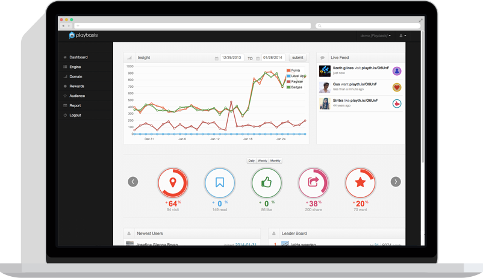
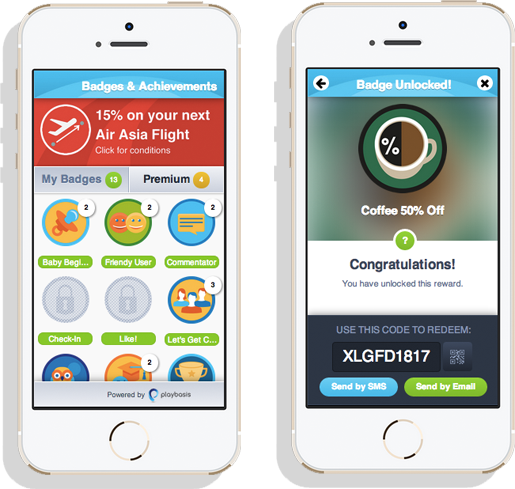

<div class="container page" data-page="demo">

    {% include sidebar.html %}

  <div class="content-page-col">
    <div class="content-page-wrapper">
      <h1>Demo</h1>

      <!-- <div class="row">
        <div class="col-sm-8">
          
        </div>
        <div class="col-sm-4">
          <h3>Demo Gamification</h3>
          <p>Playbasis provides demo of gamification integrated in website with full responsive looks. The demo covers all basic features of Playbasis Gamification Platform capabilities. Including website-action integration, e-commerce supported, users’ dashboard with past activities, leaderboard, live feed, and achievement system.</p>
          <a href="http://demo.playbasis.com/" target="_blank" class="btn btn-primary btn-lg">View Demo</a>
        </div>
      </div> --><!-- .row -->

      <div class="row">
        <div class="col-sm-8 right">
          
        </div>
        <div class="col-sm-4">
          <h3>Powerful Dashboard</h3>
          <p>Playbasis equips an organization with powerful tools to better engage and retain their audience, whether they are customers or employees. Playbasis utilizes proven techniques from social games and applications to drive user behavior. Playbasis gives businesses the ability to not only measure audience behavior, but to drive behaviors towards desired business outcomes. The Dashboard comes with essential business tools for performing analysis and report composing as ready-to-use excel or csv file.</p>
          <a href="http://pbapp.net/" target="_blank" class="btn btn-primary btn-lg">View Demo</a>
        </div>
      </div><!-- .row -->

      <div class="row">
        <div class="col-sm-6 col-sm-offset-1">
          
        </div>
        <div class="col-sm-4 col-sm-offset-1">
          <h3>Demo Mobile SDK</h3>
          <p>Playbasis Mobile SDK allows any mobile and tablet applications, whether they are normal applications or games, to give users rewards, badges, and achievements. With Playbasis Mobile SDK integration, every action done in your apps will give users more exciting engagement.</p>
          <a href="http://demomobile.playbasis.com/" target="_blank" class="btn btn-primary btn-lg">View Demo</a>
        </div>
      </div><!-- .row -->

    </div><!-- .content-wrapper -->

  </div><!-- .content-page-col -->
</div><!--/.container-->